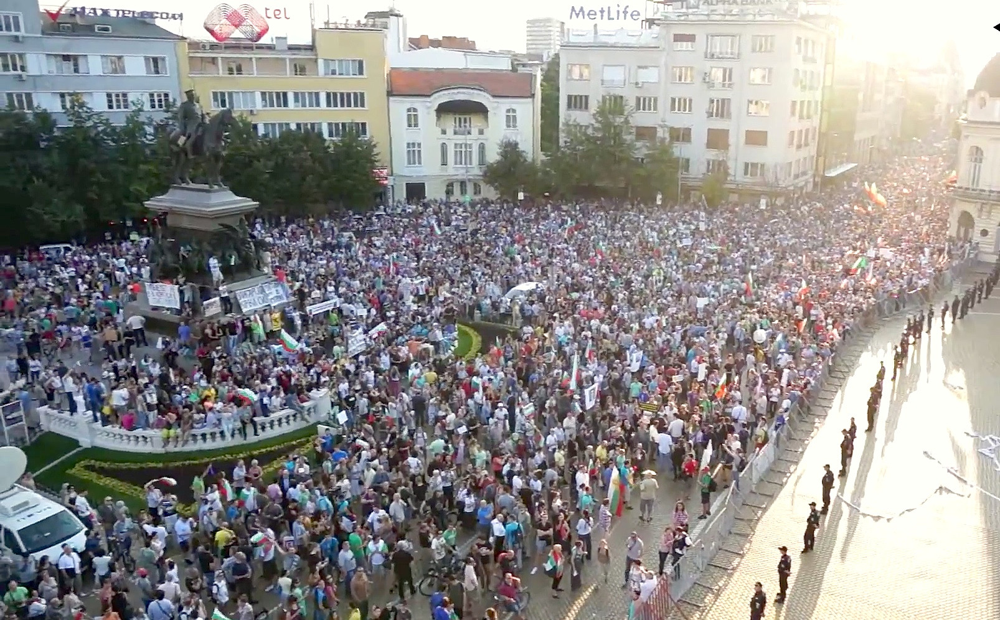
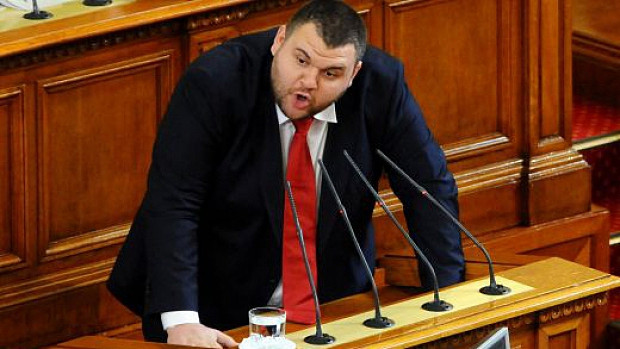
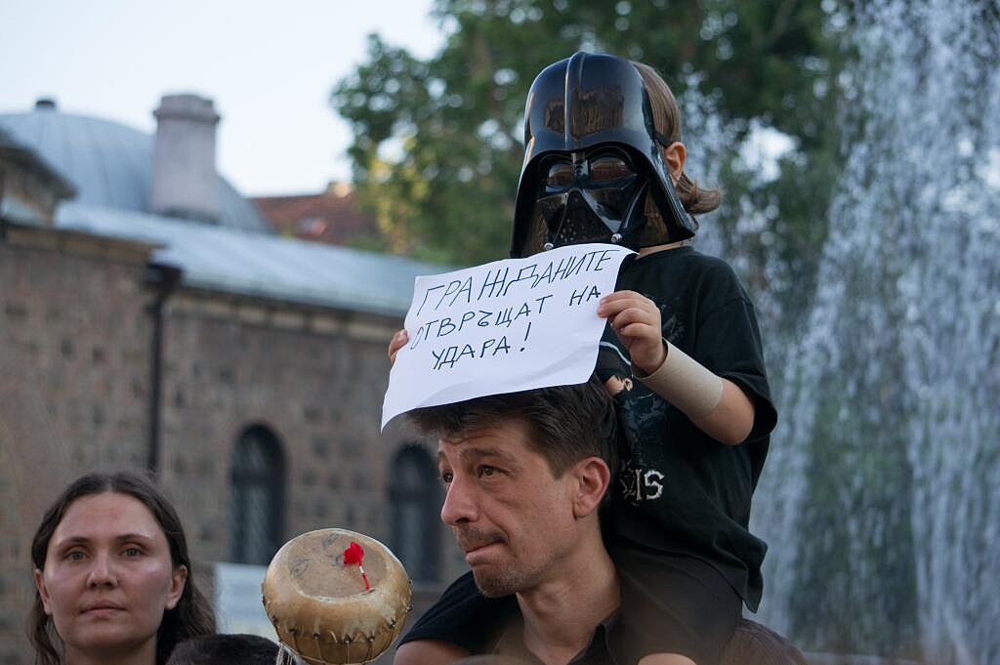
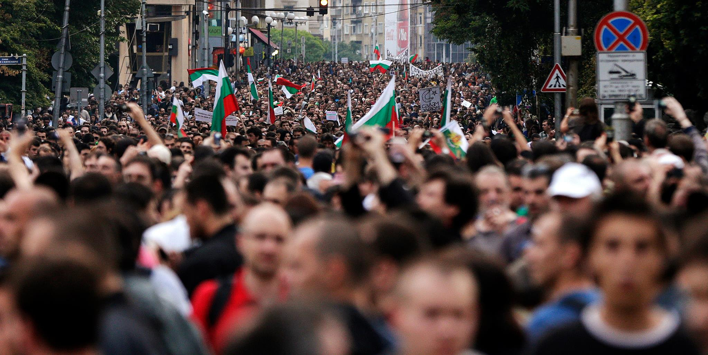

Der Originaltext dieses Artikels wurde von Georgi Marinov geschrieben und erschien am 19.06.2013 zum ersten Mal hier. Das ist nur eine Übersetzung, die das Ziel hat, auch für die deutschsprachigen Leser ein bisschen mehr Klarheit über die jüngsten Ereignisse in Bulgarien zu schaffen. Dieser Text wurde ins Deutsche von Andrey Atanasov, Anna Artinyan und Yana Shaterova übersetzt.
Was passiert in Bulgarien?
Demonstranten auf den Straßen von Sofia brauchen Ihre Unterstützung
Wenn Sie 24 Jahren hätten, um die Politik eines Landes zu ändern und zu verbessern, würden Sie diese zu Ihrem eigenen Vorteil ausnutzen?
Auf den ersten Blick ist das schöne Bulgarien ganz demokratisch – Gesetze, Wahlen, ein Parlament, einen Präsidenten, Märkte, EU-Mitgliedschaft, freien Willen, Werke, wir haben es alles. Wenn Sie von außen schauen, ist es eindeutig da. Das Innere dieses seltsamen Hologramms fühlt sich aber sehr unterschiedlich, vor allem wenn Sie ein Bulgare sind.
Erfassen Sie das Wesentliche? Ich wette, dass Sie das Ausmaß immer noch nicht begriffen haben.
Die Menschen sind auf den Straßen und protestieren. In allen größeren Städten – Sofia, Plovdiv, Varna, Burgas – passiert das schon seit sechs Tagen. Zehntausende von Bulgaren fordern Wandel, dass die unfähigen "Experten"-Regierung zurücktritt und das Parlament aufgelöst wird.
Wir fordern unsere Würde zurück.

Wohl kaum, sagt der Ministerpräsident.
Parlamentswahlen waren nur vor fünf Wochen. Heute ist die Mehrheit der Wähler im mehr-als-schlechten bulgarischen Parlament nicht mehr vertreten. Ein Viertel der Kandidaten konnten die Vier-Prozent-Hürde nicht überschreiten, die Partei mit den meisten Stimmen (30%) hat gerade angekündigt, dass sie nicht mehr an den Parlament-Sitzungen teilnehmen wird und weitere sieben Prozent der Wähler sahen ihren Parteiführer, als er, einmal im Parlament sitzend, alle Versprechen seiner Kampagne verwarf. Summe: 62%.
Klingt nach Verletzung? Wie ist das als eine Beleidigung: am vergangenen Freitag, Medienmogul und Abgeordneter mit einer schattigen Vergangenheit Deljan Pejewski, wurde als Chef von Bulgariens Staatlicher Agentur für Nationale Sicherheit eingesetzt. Das geschah in Eile, ohne Diskussion, und nachdem das Gesetz maßgeschneidert wurde, damit er als ein geeigneter Kandidat für die Stelle erscheint. Er wurde nominiert, ausgewählt und vereidigt, alles an einem Nachmittag.
ДАНС (Ausgesprochen wird es "DANS") ist so etwas wie der US-Geheimdienst NSA, nur kleiner. Doch ähnlich wie die NSA können sie auch Kommunikationen mithören. Stellen Sie sich vor was passiert, wenn der Leiter der Agentur ein Politiker ist?
Damit wir uns nicht in Behauptungen hinreißen lassen, hier auch ein paar Fakten:
 Pejewski hat ein beträchtliches Vermögen. Im Jahr 2007 wurde wegen Korruption gegen ihn ermittelt und er ist auch auf einem Foto von 2002 zusammen mit Ilija Pawlov zu sehen – ein wohlhabender "Geschäftsmann“, der später im selben Jahr mit einem Scharfschützengewehr erschossen wurde. Nur für das Protokoll, Geschäftsleuten werden in Bulgarien üblicherweise nicht weggeputzt.
Der Stand der Dinge ist, um einen Fachbegriff zu nutzen, „total im Arsch“.
Wenn Sie nur wüssten, wie viele ähnliche Absurditäten wir in den letzten 24 Jahren erlebt haben und wie sie sich auf das Land ausgewirkt haben. Für diejenigen, die jetzt auf den Straßen sind, war das der Tropfen, der das Fass zum Überlaufen gebracht hat. Eine groteske Nachahmung einer “Experten“-Regierung, die zwei Wochen nach der Vereidigung ihre Verbindungen zu Korruption und organisierter Kriminalität durchaus entblößt? Niemand wird sich das weiter gefallen lassen.

In Protestmärschen ist Frieden zerbrechlich. Bisher hat es die Menge geschafft, die Ruhe zu bewahren (doch nicht die Stille!). Aber man fragt sich wie lange. Alles was es braucht ist eine Person, die bezahlt worden ist, um die Polizei zu provozieren und Zusammenstöße auszulösen. Gestern hat die Polizei neun Menschen festgenommen, mit Messern und allem.
Wer benötigt noch einen Gezi?
Helfen Sie uns! Wir tun unser Bestes, um mehr Leute in die Diskussion zu bringen und internationale Nachrichtenagenturen zu überzeugen, näher davon zu berichten. Soweit hat die BBC lediglich "eine paar Demonstranten" erwähnt (doch das war kein wirklicher Bericht) und wir haben ein trockenes Nicken von Reuters, einen kurzen Artikel in Euronews und noch einen in Fox bekommen. Von den deutschsprachigen Medien haben nur die Zeit und die Welt ganz kurz davon berichtet, Neue Zürcher Zeitung hat sich ein bisschen mehr Mühe gegeben und einen ausführlicheren Artikel über das Thema verfasst. Immerhin ist das ein Anfang.
Die Geschichte zeigt, dass unsere Politiker nicht zuhören, es sei denn, die Welt schaut zu.
Und trotz aller Proteste scheint die Welt noch nichts zu bemerken.
Der Glaube an einen positiven Wandel ist in Bulgarien brüchig und hält nicht lange.
Was kann man tun?
Wenn Ihnen, wie mir, sehr viel daran liegt, dann:
- Twittern Sie mit #ДАНСwithme, teilen Sie diesen Beitrag, schärfen Sie das Bewusstsein anderer fürs Thema.
- Schreiben Sie in Ihrem Blog darüber. Meinungen aus dem Ausland sind großartig und sie halten uns auf Trab.
- Üben Sie Kritik an unserer Regierung. Sie sind Affen und sie haben nichts anderes verdient.
Nur bitte nicht in die andere Richtung schauen, bis Sofia in Flammen steht.

Nähere Auskünfte:
- Plea to Europe
- The politics, as told by the people
- Facebook #ДАНСwithme
- Ja, vom Fachlichen her gesehen, wird es Regulatory Capture genannt.
- Freedom House Nations in Transit 2013 report on Bulgaria
- globalpost